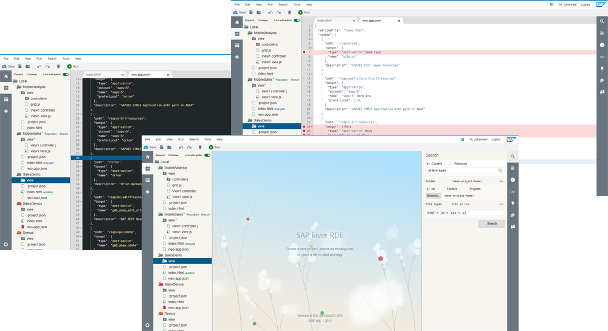

- SAP Web IDE — Design Guidelines

Welcome to the Design Guidelines for Contributors to the SAP Web IDE.

This document is intended for contributors, plugins, and tools that wish to be incorporated into the SAP Web IDE and to align the styling of their standalone tools to it. It targets designers and developers alike and provides information to follow its visual and interaction design.
In addition, these pages provide an overview of the design language for the SAP Web IDE and a documentation of its design rationale, a list of the controls used, as well as a description of suggested patterns. In case you wish to dive deeper, you can follow the links at the end of the chapters that take you to the corresponding page of the SAP Web IDE project wiki.
Last updated: June 29, 2014